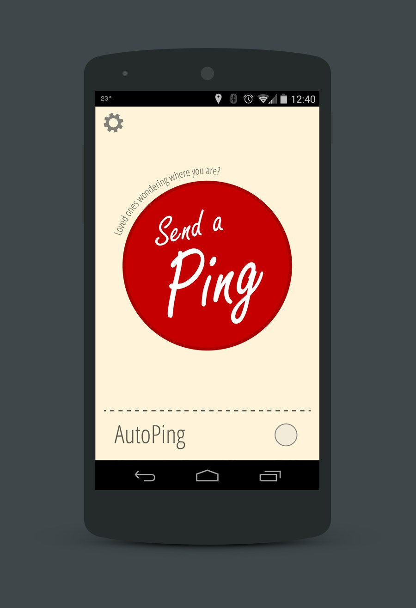
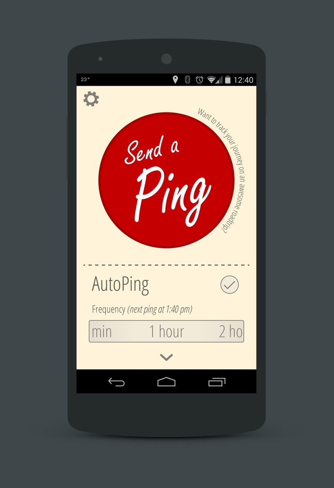
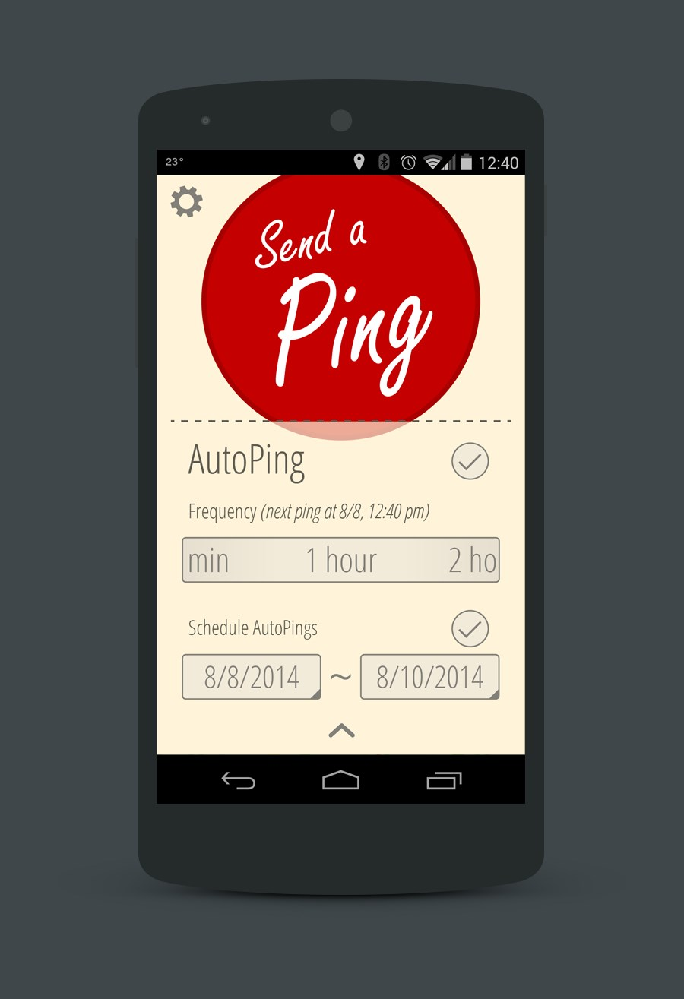
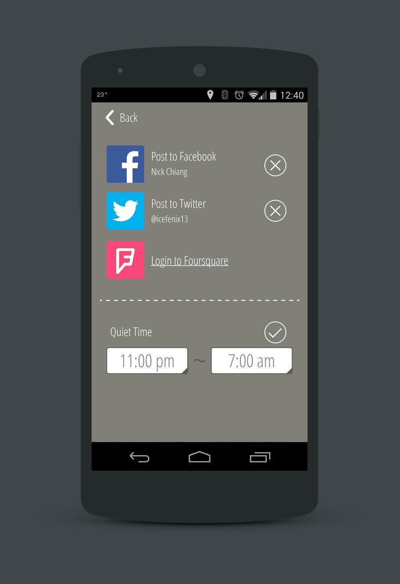
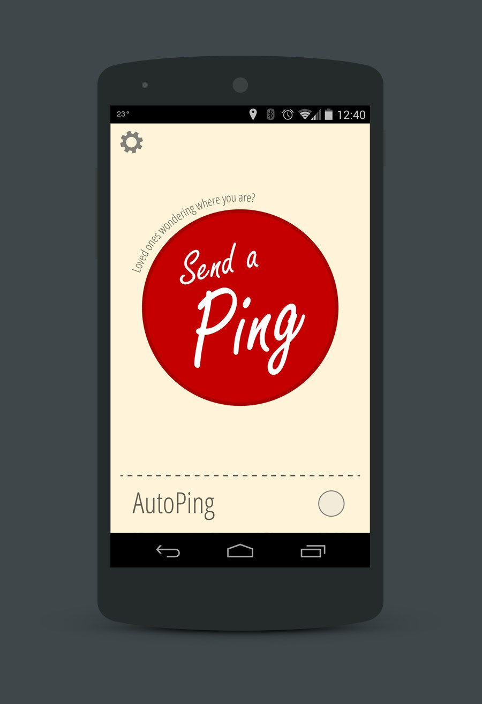
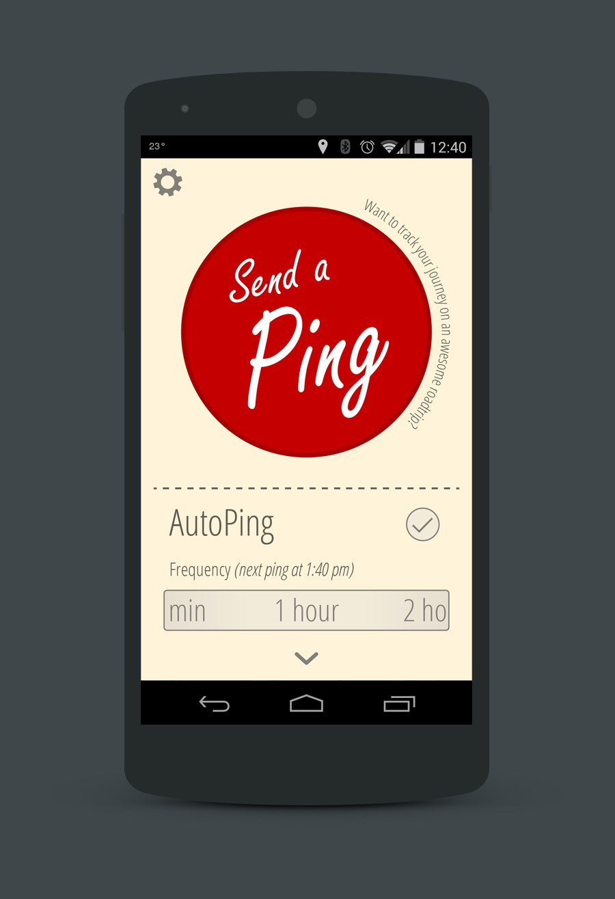
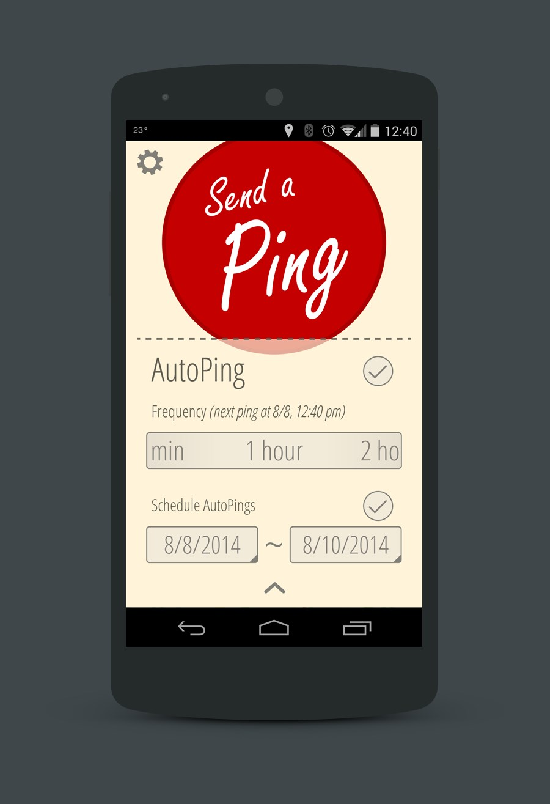
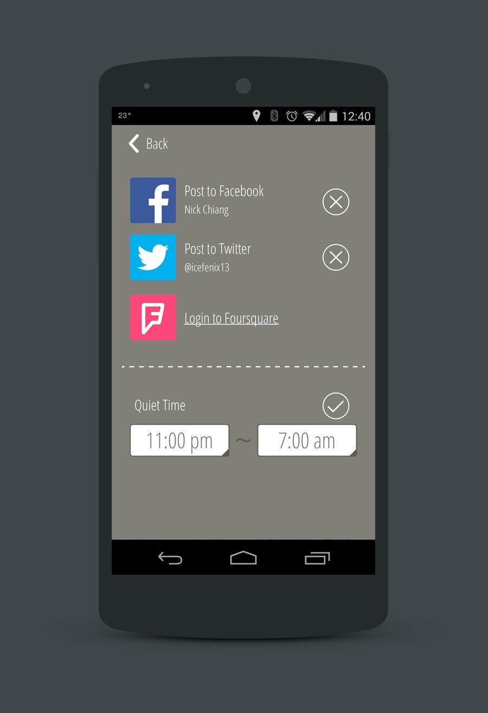

Jaunt Player App
The Jaunt Player app is a 360 degree video app designed for iOS and Cardboard. It presents users with a simple 2D interface for selecting a piece of content to watch, then prompts users to view the content within a Cardboard VR headset.
Issues and Requirements
- Allow content managers to highlight newly added and featured content on the main screen.
- The majority of users of the app are new to VR and Cardboard headsets, and need guidance through the experience.
Approach
- A server configurable layout hierarchy and badging system to allow
- Individual video preview pages that give users more information about the video they're about to watch, as well as the ability to share out to social media.
- Multiple points of guidance for users new to VR - information page with details on acquiring and using a Cardboard headset, guided prompts prior to watching videos to give time for users to get their Cardboard headsets setup.
- Quick turnaround time - app was designed, written and shipped to the Apple app store in the span of 2 weeks.
{kind=link}
{kind=link}
Ping App Concept
When going on a trip, friends and loved ones will often like to keep tabs on one's progress, particularly if travelling alone. Inspired by my friend's solo motorcycle trip across North America, the goal of the Ping app is to provide a means for users to easily inform their friends and loved ones of their whereabouts through social media.
Issues and Requirements
- Friends and loved ones want to keep tabs on a user's progress on a trip
- It can be easy to forget to, and sometimes inconvenient, to manually check-in on social media to report one's progress
- Travelling through low cellular reception areas can make it difficult to check-in via a data connection
Approach
- The Ping app provides an easy means to send updates to social media (i.e. Facebook, Twitter)
- Easy, single tap experience to manually report a user's location
- Ability to setup automatic timed posts to social media, reporting the user's position
- In areas where cellular reception is too low for a data connection, use SMS under the covers to report the user's position
{kind=link}
{kind=link}
 







{kind=link}
{kind=link}
{kind=link}
{kind=link}